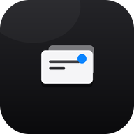
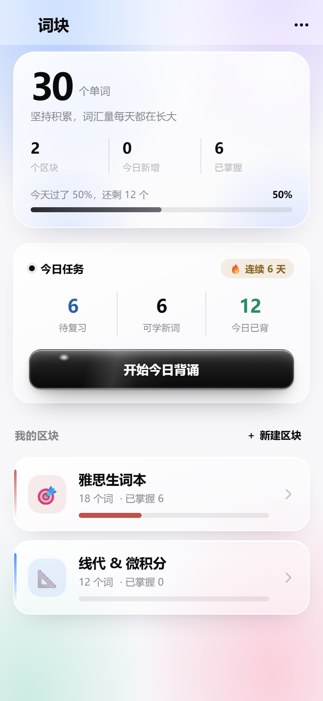
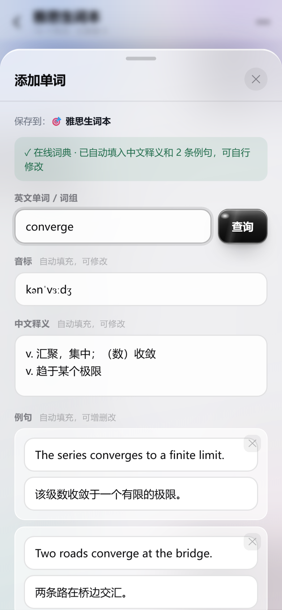
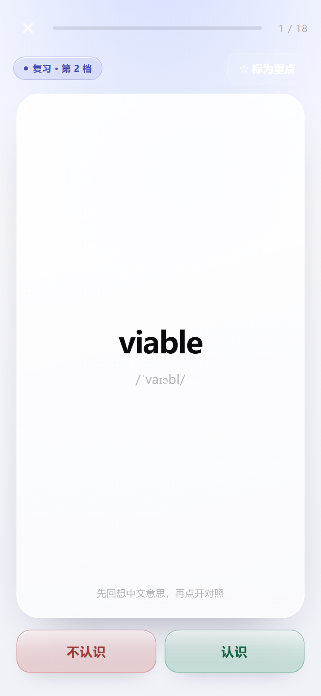

如果你跟我一样，平时不是抱着单词书干背，而是读文章的时候碰上不认识的词，查完顺手记进自己的本子，过几天再翻出来反复看——那这个大概适合你。
我是为了读英文文献才做的。查、记、背本来要开三个 App，来回复制粘贴；现在它是同一件事，做完就完了。
—— 一个要读英文文献的人输入英文单词或词组，音标、中文释义、两三条例句自动填进表单，填完直接改，不用在词典和笔记之间来回切换。内置 231 条线代 / 微积分英文术语，离线优先命中，数学语境下的释义比通用词典准；没收录的再走在线词典，查不到还能手填。
按区块收纳（雅思生词本、线代 & 微积分，或自己新建、自己配色）。一行一个批量导入，一篇文献的生词可以整段贴进去，一次查完一起入库。要用纸的时候随时导出 PDF：背诵表 / 对照表 / 卡片模式（裁开折叠）/ 自测卷（只印英文留空默写）四种版式，也能直接连打印机。
9 档间隔，从 10 分钟到 120 天：认识了往后推一档，模糊就间隔砍半，不认识回第一档重来。复习和学新词并行，每次 10 / 20 / 30 / 50 或自己填（1–500）；背完当天的量还能继续加练，不会出现「今天没得背了」。记忆曲线的思路跟扇贝那套一样，只是词全是你自己收的。
装 词块WordBlocks-6.2.apk，允许「安装未知来源」即可。包很小，137 KB，不占地方。
有 词块WordBlocks-4.0.ipa，需要 Sideloadly 或 AltStore 侧载，免费 Apple ID 签名 7 天，掉签重装一次。